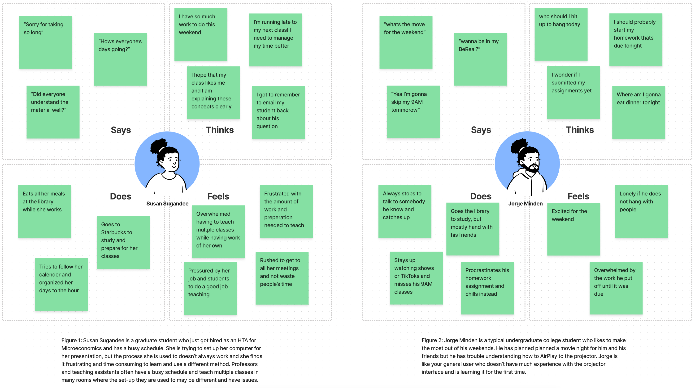
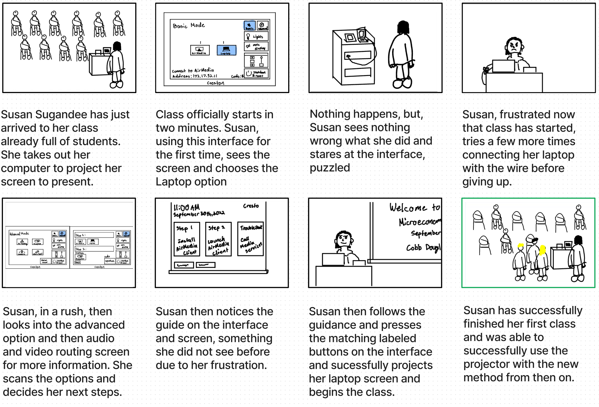

After attending classes at Brown and likely most other colleges, you may have likely been projected a presentation or video for class. Almost all classrooms at Brown have projecting capabilities that is controlled through this projection console. It helps to consolidate all the buttons required in the classroom into one interface. Did you know that you can control the room's lights, shades, and even audio from the same interface? This website's goal is to explore and analyze the structure of the interface. We will analyze the Projection interface in the context of its possible users.
This is an interface that controls the projector, lights, shades, audio, and screen all in one location. It is used by
many to project their screens, to show presentations, videos, and many more things. This interface aims to simplify the complex
steps it would take to set up a room for a screen projection, as each object such as the lights and shades have their own set of controls.
There are many buttons on a projector and around the room that have been consolidated into this one interface!
The inital page is for fast and easy operations, with common fuction in the utility bar to the right of the screen.
Then there is an advance page that brings you to a series of other page to have more custimzation and control over the room.
Preface: We observed different users who used the projection console throughout Brown University buildings. We were able to observe professors, teaching assistants, and student to provide a sample that represented different ages, jobs, nationalities and socioeconomic demographics since Brown's population is diverse.
Based on our observations and interviews, we can utilize that data to create personas and convey them with empathy maps

To help us better understand our personas and their goals, we can create a storyboard that demonstrates our persona's goals, expectations, and experience using our selected interface.

This storyboard is for Susan Sugandee, who's goal is to be the best HTA that she can be. However, due to many commitments, she tends to rush through her tasks. She has had little time to prepare, but goes into class with a presentation. She see she has many options to present, and tries the easiest and most familiar option. However, this does not work which makes her frustrated as this had worked before, but she tries another method rahter than waste time. Luckily there was a bit of guidance that allowed her to successfully project her computer screen. This persona did not want to waste her student's time and wanted to perform her duties correctly. This storyboard reflects how the interface can be confusing and not work as expected at times, and can be frustrating at times.